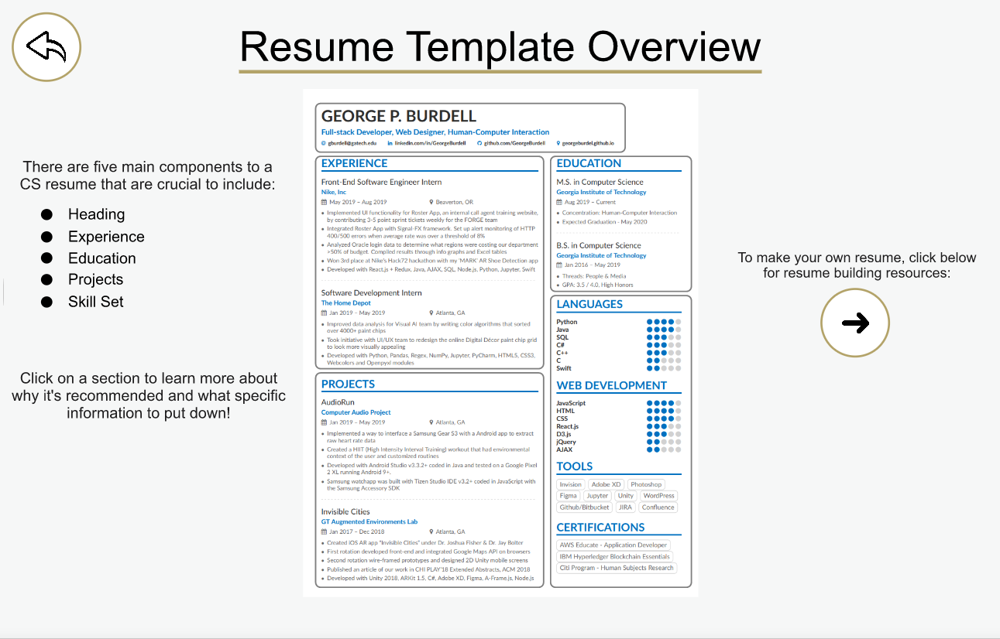

Resumaker
Fall 2019 graduate group project for CS 6460 Educational Technology at GT. The project topic was the GT campus community and we chose to focus on students in the College of Computing that are trying to develop their resumes but are unsure how to format their experience. We've interated and developed a protoype that thoroughly explains each section in a CS & CM resume, and we have tested it with current students at GT. The project achieved a high A overall in the class and we have put together a video presentation at the end.
- Client:GT Graduate Class Prototype
- Prototype:Resumaker
- Completed:Dec 11, 2019

Background
The course project ran the duration of the semester with three primary design reviews that required deliverables. We worked with a team of 4 students, mix of undergraduate and graduate, and chose a project based on interest
and the availability of an authentic design context. We were encouraged to propose projects on our own as well as projects that focus on the Georgia Tech campus/community and/or leverage digital mapping technologies.
For our educational project, the main audience would be focused on students enrolled in either
computer science (CS) or computational media (CM) at GT's College of Computing.
The focus of our team is on an interface that will teach our audience to obtain greater
proficiency in formatting their resume properly, so that means that the
context of our design will be purely digital. Anyone with access to a career site should also be
able to access this, but our hope is that in a broader focus, anyone who wants to learn how to use
resume building services should be able to utilize this technology. The design context will not be
the career services themselves, but it will be used to teach others. Preferably it would be focused
more on people who haven’t had extensive knowledge or experience in designing their resumes,
so the less experienced the audience is, the more new information they will learn in using our
educational technology.
Goal
The purpose of our technology is to provide students with a tool that would teach them
some important fundamentals when building a personal resume. We recognized that with every
different person would entail a different resume in both different content and structure. Because
of this inevitable variability that will occur, it would be better if users explored this on an
individual basis. Ultimately, our team chose to create our prototype, and then have different
audiences (students, recruiters, career advisors, alumni) run through it themselves with us
helping when necessary.
In order to make a test resume template, the team agreed to modify my resume to fit all the necessary criteria that typically goes into a technical resume at GT.
We also enlisted the help of a CM alumni who graduated from GT's CM degree to send over a modifed resume as well.
Process
The prototype starts off with the user selecting their major within the College of Computing. Currently only CS is fully implemented. They are taken to a Resume Overview section which lists out the main difference between CS and general resumes. Then, once the user clicks the ‘down’ button, they are taken to the main screen where we have creatively laid out an example resume. It is split into 5 sections, each being clickable and leads to an explanation of the respective section. When the user selects a section, the resume is cropped off onto the respective side, and bullet points are laid out informing the user of crucial resume information to include. The user can go back to the previous page at any time by clicking the ‘back’ button. An image of the main interface is shown below:
As stated before, if a user wishes to zoom into a section to learn more about why the section details are included or why they are important, they may click the appropriate square section. For example, if I click "Education", it will bring me to a section description page with DO's and DON'Ts based on common resume advice:
Furthermore, if the user wishes to learn the difference between a good and badly formatted resume on this section, they can click on the "Compare" button on the top right corner to see the differences with a badly formatted resume example:
This functionality is available for all the resume sections. In addition, on version 2 of our prototype, we have included an example CM resume with the help of a few alumni. You can see that the CM resume has a similar format as well:
Testing
Our first audience for testing were two C2D2 career advisors. We knew that C2D2 at GT was actively invested with helping students with developing their career profiles, so getting their input would help us see what many students struggled with in the resume-building process. We presented them with our prototype and let them click through the different screens. We asked them questions about their experience and the knowledge they gained from using our technology and took notes on their feedback. We did this same process with two recruiters that we knew, and two alumni that we also knew. The recruiters are involved in finding CS talent, and the alumni were both past CS majors and are working in a software development field, so these two audiences had good understanding of the CS resume.
Results
Please view our team's final presentation video above for a great overview of our project milestones and test results!
You can also try out our prototype that was built with Invision on this
link
and at the top of this page as well!
One of the greatest strengths of our implementation was that we were able to get such a
wide variety of users to try our technology. To compensate for the fact that we didn’t hold a
workshop, we asked multiple users for their input and consolidated the responses through a
Google Form that they filled out. The Google Form responses and in person interviews revealed
that most users did in fact learn/reinforce their knowledge on the basics of resume building.
However, the most impactful feedback that we received was from the C2D2 advisors. One of the
advisors actually holds the resume-building workshops at GT, so he was able to provide even
more advice about what is important to include in our technology.
On the other hand, one of the weaknesses of our implementation was that our
Computational Media section is arguably weaker than the Computer Science section. The fact
that our group consisted of four CS majors did not help and while we did request help from CM
alumni, the CM section felt lacking without our group’s own experience and input. For example,
for the CS section, we shared our thoughts on good versus bad examples for each part of the
resume, whereas the CM section had no such comparison. Another weakness was that our
implementation did not provide enough coverage for more specialized CoC resumes. Through
evaluating the feedback from C2D2 advisors/interviews, we’ve come to understand that while it
is important to have your fundamentals, a distinct resume is what the students really need in
order to stand out amongst their peers.
From the entire process as a whole, we learned many new aspects of teaching a subject
that we had never even considered. These lessons range from specific lessons about the
components and complexity of resumes to general knowledge of teaching and educational
technology.